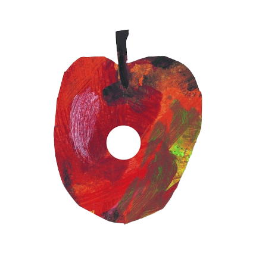
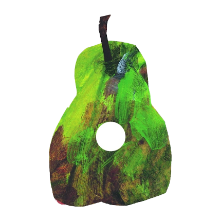
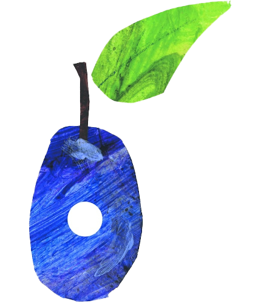
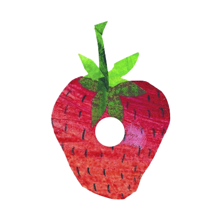
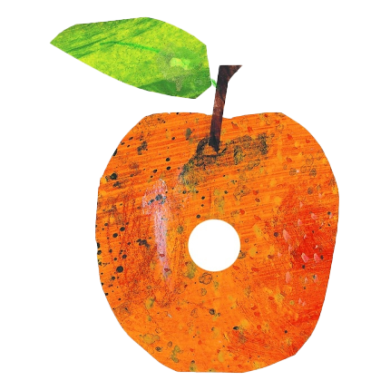
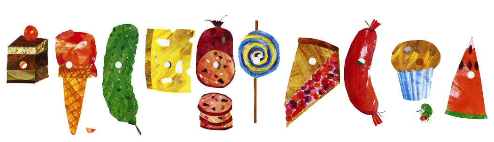
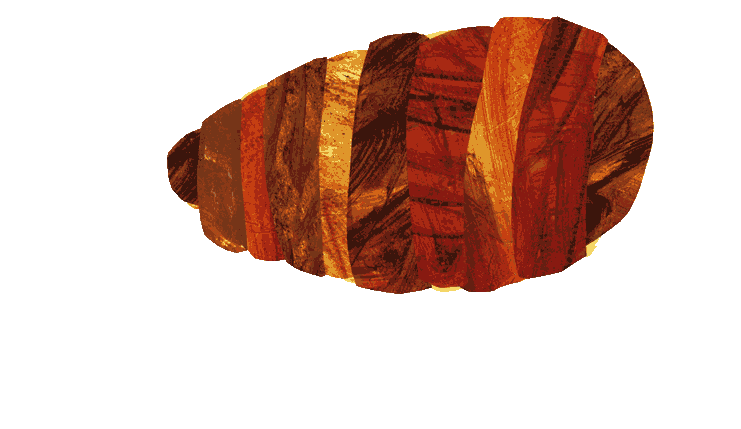
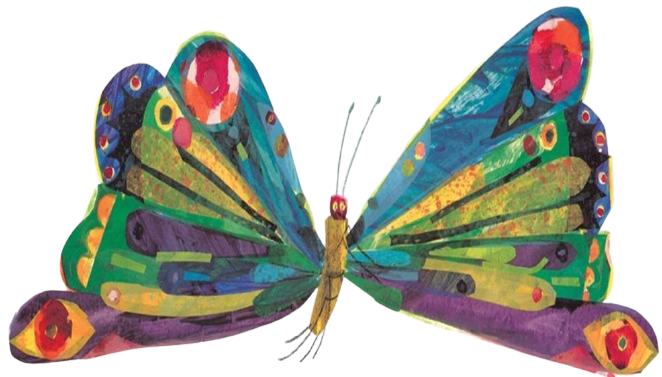
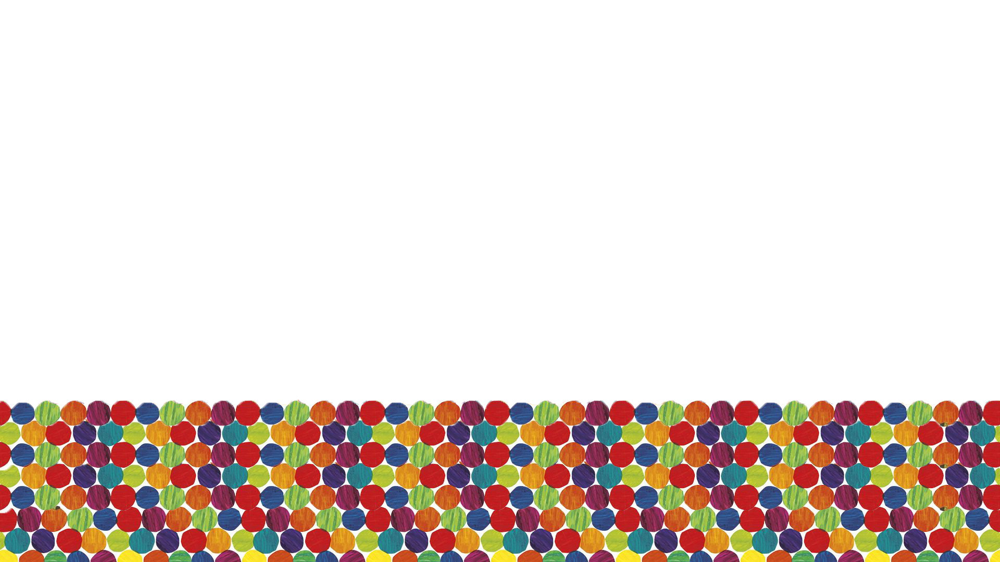

In the light of the moon a little egg lay on a leaf.

By Eric Carle
girl u lookin at the wrong file
In the light of the moon a little egg lay on a leaf.
One Sunday morning the warm sun came up and-pop!-Out of the egg came a tiny and very hungry caterpillar.

He started to look for some food.

On Monday he ate through one apple. But he was still hungry.

On Tuesday he ate through two pears, but he was still hungry.

On Wednesday he ate through three plums, but he was still hungry.

On Thursday he ate through four strawberries, but he was still hungry.

On Friday he ate through five oranges, but he was still hungry.

On Saturday he ate through one piece of chocolate cake, one ice-cream cone, one pickle, one slice of swiss cheese, one slice of salami, one lollipop, one piece of cherry pie, one sausage, one cupcake, and one slice of watermelon.
That night he had a stomachache!
The next day was Sunday again. The caterpillar ate through one nice green leaf, and after that he felt much better.

Now he wasn’t hungry anymore - and he wasn’t a little caterpillar any more.
He was a big, fat, caterpillar

He built a small house, called a cocoon, around himself. He stayed inside for more than two weeks. Then he nibbled a hole in the cocoon, pushed his way out and...
he was a beautiful butterfly! 
The End.
